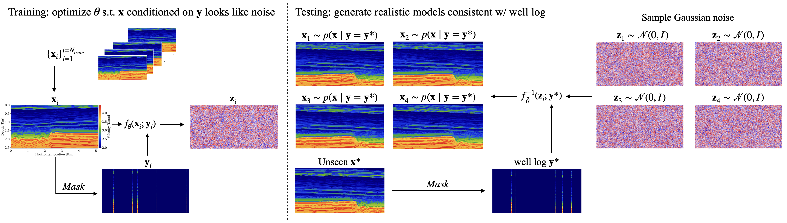

Generative Seismic Kriging with Normalizing Flows
Felix J. Herrmann ![]()
\[ \newcommand{\pluseq}{\mathrel{+}=} \]
Image 2023 abstract
OBJECTIVES AND SCOPE
The objective is to demonstrate the applicability of Normalizing Flows (NFs) to subsurface kriging from wells. We will show that after supervised training, we can generate multiple realistic samples of plausible earth models that match the observed wells. We observe that these samples produce uncertainty statistics that are correlated with the complex parts of the model. The applicability of this method is for areas nearby the original survey used for training. Finally, we compare the speed and quality of our solutions with those obtained using a traditional variogram approach.
METHODS, PROCEDURES, PROCESS
Kriging is highly ill-posed (there is no unique solution), therefore, ideal methods should be able to produce many models that match the observed well log data. Generative networks can be used to sample models that are conditioned on observations. A particular class of generative networks are normalizing flows. These are particularly attractive because they are fast to sample from and have low training memory requirements from their invertibility. We implemented our architecture in Julia with InvertibleNetworks.jl.
Our method is supervised and needs training examples of observed wells “y” with its corresponding full earth models “x”. We use the 3D Compass model with a 90%/5%/5% train/validate/test split of 2D slices. For each training slice (nz=256, nx=512, d=10m) of the Compass volume, we randomly generate well observations by selecting 5 horizontal locations at least 200 meters from each other. This process creates the training pairs (x_i,y_i) for the normalizing flow. We made 10k pairs and trained as visualized in Figure 1.
After training, we input an unseen well log y (5 wells) and produce posterior samples p(x|y) (earth models). To create a single point estimate, we average all posterior samples to get the posterior mean.
Our baseline, is an exponential variogram from the package PyKrige. The variogram parameters are automatically selected by the well log data. We manually set the anisotropy angle to 0 to match the overall horizontally layered structures of Compass.

RESULTS, OBSERVATIONS, CONCLUSIONS
In Figure 2, we show posterior samples generated with our method (10ms/sample on our GPU). To validate the quality of the earth models produced, we compare the posterior mean with the ground truth from a leave-out test set. We compare various metrics (SSIM, PSNR, RSME and time-to-compute) and verify that our method produces better reconstructions while being faster than a variogram approach.
We study the uncertainty of our approach by calculating the variance between the posterior samples and compare with the calculated variance of the variogram. We see in Figure 2 that our method produces uncertainty results that are more interpretable and correlate with specific structures in the subsurface.
The table in Figure 2 shows the quantitative performance of our method. Our method produces a high quality point estimates with an average RMSE of 0.038 compared to the variogram with an average RMSE of 0.043. The posterior mean gives a smooth model with less error on average, however we recommend practitioners use posterior samples as they maintain realistic earth characteristics.
This method has learned long range structures in the training survey area and can extrapolate them further. Generalization to other survey areas is out of the scope of this project but future work will explore it. We conclude that our method is a promising option for creating realistic earth models that match observed data wells and that it offers quantitative advantages over traditional approaches.

SIGNIFICANCE/NOVELTY
We introduce the use of normalizing flows for kriging. While previous implementations of normalizing flows have struggled on high dimensional models, we demonstrated our implementation allows for learning on large realistic models. This method is set to scale to 3D models in future work to further enable the application of these methods to real-world seismic problems. In contrast with traditional variograms, our method produces realistic models, that is particularly important for downstream tasks in reservoir engineering and other applications where multiple plausible models are needed.